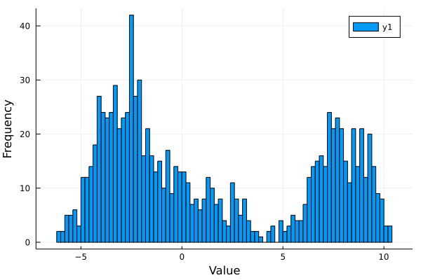
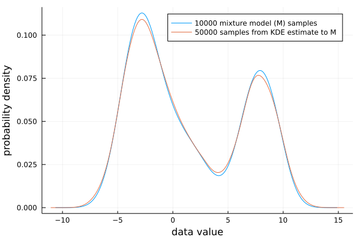
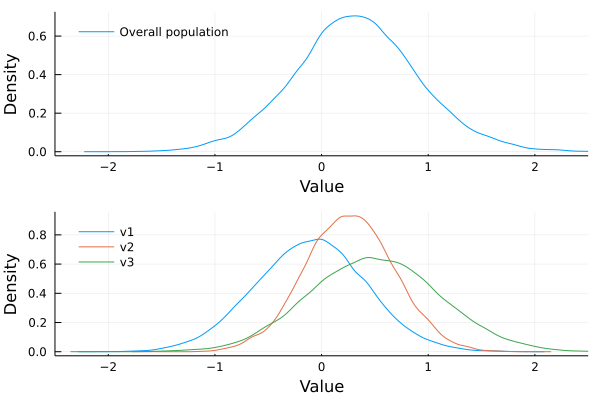
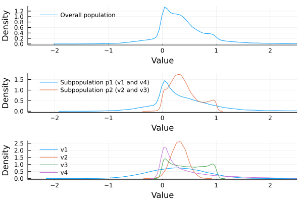
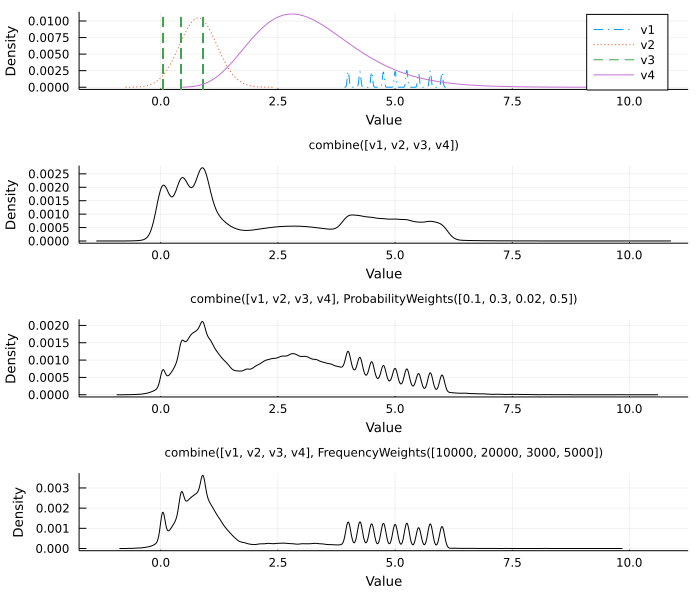

Uncertain values
UncertainValue constructors
The following convenience constructors are used to defined uncertain values.
UncertainData.UncertainValues.UncertainValue — FunctionUncertainValue(d::Distribution)
UncertainValue(d::Type{Normal}, μ, σ) → UncertainScalarNormallyDistributed
UncertainValue(d::Type{Uniform}, lower, upper) → UncertainScalarUniformlyDistributed
UncertainValue(d::Type{Beta}, α, β) → UncertainScalarBetaDistributed
UncertainValue(d::Type{BetaPrime}, α, β) → UncertainScalarBetaPrimeDistributed
UncertainValue(d::Type{Gamma}, α, θ) → UncertainScalarGammaDistributed
UncertainValue(d::Type{Frechet}, α, θ) → UncertainScalarFrechetDistributed
UncertainValue(d::Type{Binomial, n, p) → UncertainScalarBinomialDistributed
UncertainValue(d::Type{BetaBinomial, n, α, β) → UncertainScalarBetaBinomialDistributedConstruct an uncertain value represented by a (possibly truncated) theoretical distribution d.
UncertainValue(d::Type{<:Distribution}, x::AbstractVector) → UncertainScalarTheoreticalFitConstruct an uncertain value by fitting a distribution of type d to an empirical sample x, and use that fitted distribution as the representation of x.
See also: UncertainScalarTheoreticalFit
UncertainValue(x::AbstractVector;
kernel::Type{<:Distribution} = Normal, npoints::Int = 2048) → UncertainScalarKDEConstruct an uncertain value by estimating the underlying distribution to the empirical sample x using the kernel density estimation (KDE), then using the resulting KDE-distribution as the representation of x. Fast Fourier transforms are used in the kernel density estimation, so the number of points should be a power of 2 (default = 2048).
See also: UncertainScalarKDE
UncertainValue(pop::Vector, probs::Union{Vector, AbstractWeights}) → UncertainScalarPopulationConstruct an uncertain value from a population pop, whose sampling probabilities (prior beliefs) are probs. The population pop can contain any type of uncertain value. Scalars in pop are converted to CertainScalars.
See also: UncertainScalarPopulation
UncertainValue(x::T) where {T <: Real} → CertainScalarCreate a CertainScalar instance from a scalar with no uncertainty.
See also: CertainScalar
UncertainValue(m::Measurement) → UncertainScalarNormallyDistributedConvert a Measurement instance to an uncertain value compatible with UncertainData.jl.
Measurement instances from Measurements.jl[1] are treated as normal distributions with known means. Once the conversion is done, the functionality provided by Measurements.jl, such as exact error propagation, is lost.
Examples
Theoretical distributions with known parameters
Measurements are often given as a mean and an associated standard deviation. Such measurements can be directly represented by the parameters of the distribution.
Assume a data point has a normally distributed uncertainty, with a mean value of 2.2 and standard deviation of 4.0. We use the following notation to represent that value.
using UncertainData, Distributions
UncertainValue(Normal(2.2, 4.0))
UncertainValue(Normal, 2.2, 4.0) # alternative constructorOther distributions, as well as truncated distributions, also work.
using UncertainData
UncertainValue(Uniform, -5.0, 5.0)
UncertainValue(Gamma, 3.0, 1.2)
lo, hi = 0.5, 3.5 # truncation limits
UncertainValue(Truncated(Gamma(4, 5.1), lo, hi))Theoretical distributions with parameters estimated from empirical data
In some cases, it might be convenient to represent an empirical sample by a porobability distribution whose parameters are estimated from the sample. Here, we simulate a real dataset by generating a small sample from a normal distribution, then fit a normal distribution to it.
using UncertainData, Distributions
s = rand(Normal(0, 1), 100)
# Represent the sample `s` by a normal distribution with estimated parameters
x = UncertainValue(Normal, s)Distributions estimated using the kernel density approach
For empirical data with non-trivial underlying distributions, one may use kernel density estimation to fit a distribution to the empirical sample.
Below, we simulate a multimodal empirial sample, and represent that sample by a kernel density estimated distribution.
using UncertainData, Distributions
M = MixtureModel(Normal[
Normal(-2.0, 1.2),
Normal(0.0, 1.0),
Normal(3.0, 2.5)], [0.2, 0.5, 0.3])
# This is our sample
s = rand(M, 40000)
# `x` is now a kernel density estimated distribution that represents the sample `s`
x = UncertainValue(s) # or UncertainValue(UnivariateKDE, s) to be explicitPopulations (discrete sets of values with associated weights)
Sometimes, numerous measurements of the same phenomenon might be available. In such cases, a population may be used to simultaneously represent all data available. Weights representing prior beliefs can be added (set weights equal if all points are equiprobable).
Below, we assume x1 and x2 were measured with sophisticated devices, giving both a mean and standard deviation. x3, on the other hand, was measured with a primitive device, giving only a mean value. Hence our trust in x3 is lower than for x1 and x2. The following
x1 = UncertainValue(Normal, 0.1, 0.5)
x2 = UncertainValue(Gamma, 1.2, 3.1)
x3 = UncertainValue(0.1)
pop = [x1, x2, x3] # the population
wts = [0.45, 0.45, 0.1] # weights; `x1` and `x2` are equiprobable, and more probable than `x3`.
UncertainValue(pop, wts)Values without uncertainties
Numerical values without associated uncertainties must be converted before mixing with uncertain values.
x = UncertainValue(2.0)Compatibility with Measurements.jl
Measurements from Measurements.jl are assumed to be normally distributed and errors are propagated using linear error propagation theory. In this package, resampling is used to propagate errors. Thus, Measurements must be converted to normal distributions to be used in conjuction with other uncertain values in this package.
using UncertainData, Measurements
m = measurement(value, uncertainty)
x = UncertainValue(m) # now compatible with UncertainData.jl, but drops support for exact error propagationUncertain data types
Theoretical distributions
It is common in the scientific literature to encounter uncertain data values which are reported as following a specific distribution. For example, an author report the mean and standard deviation of a value stated to follow a normal distribution. UncertainData.jl makes it easy to represent such values!
UncertainData.UncertainValues.UncertainScalarBetaDistributed — TypeUncertainScalarBetaDistributed(d::Beta, α, β)Uncertain value represented by a beta distribution d with parameters α and β.
Example
x = UncertainValue(Beta, 0.5, 3.0)UncertainData.UncertainValues.UncertainScalarBetaBinomialDistributed — TypeUncertainScalarBetaBinomialDistributed(d::BetaBinomial, n, α, β)Uncertain value represented by a beta binomial distribution d with parameters n, α and β.
Example
x = UncertainValue(BetaBinomial, 10, 0.2, 0.7)UncertainData.UncertainValues.UncertainScalarBetaPrimeDistributed — TypeUncertainScalarBetaPrimeDistributed(d::BetaPrime, α, β)Uncertain value represented by a beta prime distribution d with parameters α and β.
Example
x = UncertainValue(BetaPrime, 2.1, 3.3)UncertainData.UncertainValues.UncertainScalarBinomialDistributed — TypeUncertainScalarBinomialDistributed(d::Binomial, n, θ)Uncertain value represented by a binomial distribution d with parameters n and θ.
Example
x = UncertainValue(Binomial, 15, 0.5)UncertainData.UncertainValues.UncertainScalarFrechetDistributed — TypeUncertainScalarFrechetDistributed(d::Frechet, α, θ)Uncertain value represented by a Fréchet distribution d with parameters α and θ.
Example
x = UncertainValue(Frechet, 2.0, 2.1)UncertainData.UncertainValues.UncertainScalarGammaDistributed — TypeUncertainScalarGammaDistributed(d::Gamma, α, θ)Uncertain value represented by a gamma distribution d with parameters α and θ.
Example
x = UncertainValue(Gamma, 0.2, 0.44)UncertainData.UncertainValues.UncertainScalarNormallyDistributed — TypeUncertainScalarNormallyDistributed(d::Normal, μ, σ)Uncertain value represented by a normal distribution d with mean μ and standard deviation σ.
Example
x = UncertainValue(Normal, 1.2, 0.3)UncertainData.UncertainValues.UncertainScalarUniformlyDistributed — TypeUncertainScalarUniformlyDistributed(d::Uniform, lower, upper)Uncertain value represented by a uniform distribution d with lower and upper bounds.
Example
x = UncertainValue(Uniform, -2.5, 4.5)Fitted theoretical distributions
For data values with histograms close to some known distribution, the user may choose to represent the data by fitting a theoretical distribution to the values. This will only work well if the histogram closely resembles a theoretical distribution.
UncertainData.UncertainValues.UncertainScalarTheoreticalFit — TypeUncertainScalarTheoreticalFit(
d::FittedDistribution{D},
x::AbstractVector{T}) where {D <: Distribution, T}An uncertain value represented a distribution d whose parameters are estimated from the empirical sample x.
Examples
Here, we simulate an empirical sample. We then decide to represent the sample by a distribution whose parameters are estimated from the sample.
using UncertainData, Distributions
# Simulate a 1000-point sample by drawing from a uniform distribution.
d = Uniform(); s = rand(d, 1000)
# Represent `s` by a uniform distribution whose parameters are estimated from `s`
x = UncertainValue(Uniform, s)using UncertainData, Distributions
# Simulate a 1000-point sample by drawing from a normal distribution.
s = rand(Normal(), 1000)
# Represent `s` by a normal distribution whose parameters are estimated from `s`
x = UncertainValue(Normal, s)using UncertainData, Distributions
# Simulate a 1000-point sample by drawing from a gamma distribution
# with parameters α = 2.1, θ = 5.2.
s = rand(Gamma(2.1, 5.2), 1000)
# Represent `s` by a gamma distribution whose parameters are estimated from `s`
x = UncertainValue(Gamma, some_sample)Note: these examples are contrived: of course, estimating the parameters of a uniform distribution from a sample drawn from a uniform distribution will yield a good fit. Real samples are usually less straight-forward to model using theoretical distributions. In real applications, make sure to always visually investigate the histogram of your data before picking which distribution to fit! Alternatively, use kernel density estimation to fit a distribution (i.e. UncertainScalarKDE).
Beware: fitting distributions may lead to nonsensical results!
In a less contrived example, we may try to fit a beta distribution to a sample generated from a gamma distribution.
using Distributions, UncertainData
# Generate 1000 values from a gamma distribution with parameters α = 2.1,
# θ = 5.2.
s = rand(Gamma(2.1, 5.2), 1000)
# Represent `s` by a beta distribution whose parameters are estimated from `s`
x = UncertainValue(Beta, some_sample)This is obviously not a good idea. Always visualise your distribution before deciding on which distribution to fit! You won't get any error messages if you try to fit a distribution that does not match your data.
If the data do not follow an obvious theoretical distribution, it is better to use kernel density estimation to define the uncertain value.
Kernel density estimates (KDE)
When your data have an empirical distribution that doesn't follow any obvious theoretical distribution, the data may be represented by a kernel density estimate to the underlying distribution.
UncertainData.UncertainValues.UncertainScalarKDE — TypeUncertainScalarKDE(d::KernelDensity.UnivariateKDE, x::AbstractVector, range, pdf)An uncertain value represented by a kernel density estimate d, to the underlying distribution for the empirical sample x.
range are the values for which the pdf is estimated, and pdf are the corresponding values of the pdf. Gaussian kernels are used by default.
Examples
using Distributions, UncertainData, KernelDensity
# Draw a 1000-point sample from a normal distribution.
s = rand(Normal(), 1000)
# Estimate a distribution to the underlying distribution by using
# kernel density estimation on the sample `s`
x = UncertainValue(s)
# The explicit constructor allows adjusting the kernel (must be a valid
# kernel from Distributions.jl; normal distributions are the default),
# and the number of points used for the estimation (must be a power of 2;
# default is 2048 points).
x = UncertainValue(UnivariateKDE, s; kernel = Normal, npoints = 1024) Extended example
Let's create a bimodal distribution, then sample 10000 values from it.
using UncertainData, Distributions, Plots, StatsPlots
# Draw 1000 points from a three-component mixture model to create a multimodal distribution.
n1 = Normal(-3.0, 1.2)
n2 = Normal(8.0, 1.2)
n3 = Normal(0.0, 2.5)
M = MixtureModel([n1, n2, n3])
s = rand(M, 1000);
histogram(s, nbins = 80)
ylabel!("Frequency"); xlabel!("Value")
It is not obvious which distribution to fit to such data. A kernel density estimate, however, will always be a decent representation of the data, because it doesn't follow a specific distribution and adapts to the data values.
To create a kernel density estimate, simply call the UncertainValue constructor with a vector containing the sample. This will trigger kernel density estimation.
x = UncertainValue(s)UncertainScalarKDE{Float64, Vector{Float64}}(UnivariateKDE{StepRangeLen{Float64, Base.TwicePrecision{Float64}, Base.TwicePrecision{Float64}}}, range = -11.269197769054092:0.013125627772402622:15.598962281054074)The plot below compares the empirical histogram (here represented as a density plot) with our kernel density estimate.
x = UncertainValue(s)
density(s, label = "10000 mixture model (M) samples")
density!(rand(x, 50000),
label = "50000 samples from KDE estimate to M")
xlabel!("data value")
ylabel!("probability density")┌ Warning: seriestype density has been moved to StatsPlots. To use: `Pkg.add("StatsPlots"); using StatsPlots`
└ @ Plots ~/.julia/packages/Plots/lzHOt/src/args.jl:1189
┌ Warning: seriestype density has been moved to StatsPlots. To use: `Pkg.add("StatsPlots"); using StatsPlots`
└ @ Plots ~/.julia/packages/Plots/lzHOt/src/args.jl:1189
┌ Warning: seriestype density has been moved to StatsPlots. To use: `Pkg.add("StatsPlots"); using StatsPlots`
└ @ Plots ~/.julia/packages/Plots/lzHOt/src/args.jl:1189
┌ Warning: seriestype density has been moved to StatsPlots. To use: `Pkg.add("StatsPlots"); using StatsPlots`
└ @ Plots ~/.julia/packages/Plots/lzHOt/src/args.jl:1189
Populations
The UncertainScalarPopulation type allows representation of an uncertain scalar represented by a population of values who will be sampled according to a set of explicitly provided probabilities. See examples.
UncertainData.UncertainValues.UncertainScalarPopulation — TypeUncertainScalarPopulation(members, probs)
UncertainScalarPopulation(members, probs::Vector{Number})
UncertainScalarPopulation(members, probs::Statsbase.AbstractWeights)An UncertainScalarPopulation, which consists of some population members with associated weights (probs) that indicate the relative importance of the population members (for example during resampling). The members can be either numerical values, any type of uncertain value defined in this package (including populations, so nested populations are possible).
Examples
Weighted scalar populations are defined as follows. Weights must always be provided, and scalars must be converted to uncertain values before creating the population.
using UncertainData
members = UncertainValue.([1.0, 2.0, 3.0]); wts = rand(3)
# Treat elements of `members` as equiprobable
p = UncertainScalarPopulation(members, [1, 1, 1])
# Treat elements of `members` as inequiprobable
p = UncertainScalarPopulation(members, [2, 3, 1]) Uncertain populations can also consist of a mixture of different types of uncertain values. Here, we use a population consisting of a scalar, two theoretical distributions with known parameters, and a theoretical uniform distribution whose parameters are estimated from a random sample s. We assign equal weights to the member of the population.
s = rand(1000)
members = [3.0, UncertainValue(Normal, 0, 1), UncertainValue(Gamma, 2, 3),
UncertainValue(Uniform, s)]
wts = [0.5, 0.5, 0.5, 0.5]
p = UncertainValue(members, wts)Nested populations are also possible, and sub-populations can be given unequal sampling priority.
using UncertainData, Distributions
s = rand(Normal(0.1, 2.0), 8000)
v1, v2 = UncertainValue(Normal, 0.5, 0.33), UncertainValue(Gamma, 0.6, 0.9)
v3, v4 = 2.2, UncertainValue(Normal, s), UncertainValue(s)
# When sampling sub-population m1, members v1 and v2 are given relative importance 1 to 3
# When sampling sub-population m2, members v3 and v4 are given relative importance 2 to 1
m1 = UncertainValue([v1, v2], [1, 3])
m2 = UncertainValue([v3, v4], [2, 1])
# When sampling the overall population, the sub-populations m1 and m2
# are sampled with equal importance.
p = UncertainValue([m1, m2], [1, 1])Certain values
The CertainScalar allows representation of values with no uncertainty. It behaves just as a scalar, but can be mixed with uncertain values when performing mathematical operations and resampling.
UncertainData.UncertainValues.CertainScalar — TypeCertainScalarA simple wrapper type for values with no uncertainty (i.e. represented by a scalar).
Examples
The two following ways of constructing values without uncertainty are equivalent.
u1, u2 = CertainScalar(2.2), CertainScalar(6)
w1, w2 = UncertainValue(2.2), UncertainValue(6)Compatibility with Measurements.jl
Measurement instances from the Measurements.jl package[1] are in UncertainData.jl represented as normal distributions. If exact error propagation is a requirement and your data is exclusively normally distributed, use Measurements.jl. If your data is not necessarily normally distributed and contain errors of different types, and a resampling approach to error propagation is desired, use UncertainData.jl.
See the UncertainValue constructor for instructions on how to convert Measurements to uncertain values compatible with this package.
Examples
First, load the necessary packages:
using UncertainData, Distributions, KernelDensity, PlotsTheoretical distributions
A uniformly distributed uncertain value
Consider the following contrived example. We've measure a data value with a poor instrument that tells us that the value lies between -2 and 3. However, we but that we know nothing more about how the value is distributed on that interval. Then it may be reasonable to represent that value as a uniform distribution on [-2, 3].
To construct an uncertain value following a uniform distribution, we use the constructor for theoretical distributions with known parameters (UncertainValue(distribution, params...)).
The uniform distribution is defined by its lower and upper bounds, so we'll provide these bounds as the parameters.
u = UncertainValue(Uniform, 1, 2)
# Plot the estimated density
bar(u, label = "", xlabel = "value", ylabel = "probability density")
A normally distributed uncertain value
A situation commonly encountered is to want to use someone else's data from a publication. Usually, these values are reported as the mean or median, with some associated uncertainty. Say we want to use an uncertain value which is normally distributed with mean 2.1 and standard deviation 0.3.
Normal distributions also have two parameters, so we'll use the two-parameter constructor as we did above.
u = UncertainValue(Normal, 2.1, 0.3)
# Plot the estimated density
bar(u, label = "", xlabel = "value", ylabel = "probability density")
Kernel density estimated distributions
One may also be given a a distribution of numbers that's not quite normally distributed. How to represent this uncertainty? Easy: we use a kernel density estimate to the distribution.
Let's define a complicated distribution which is a mixture of two different normal distributions, then draw a sample of numbers from it.
M = MixtureModel([Normal(-5, 0.5), Normal(0.2)])
some_sample = rand(M, 250)Now, pretend that some_sample is a list of measurements we got from somewhere. KDE estimates to the distribution can be defined implicitly or explicitly as follows:
# If the only argument to `UncertainValue()` is a vector of number, KDE will be triggered.
u = UncertainValue(rand(M, 250))
# You may also tell the constructor explicitly that you want KDE.
u = UncertainValue(UnivariateKDE, rand(M, 250))Now, let's plot the resulting distribution. Note: this is not the original mixture of Gaussians we started out with, it's the kernel density estimate to that mixture!
# Plot the estimated distribution.
plot(u, xlabel = "Value", ylabel = "Probability density")
Theoretical distributions fitted to empirical data
One may also be given a dataset whose histogram looks a lot like a theoretical distribution. We may then select a theoretical distribution and fit its parameters to the empirical data.
Say our data was a sample that looks like it obeys Gamma distribution.
# Draw a 2000-point sample from a Gamma distribution with parameters α = 1.7 and θ = 5.5
some_sample = rand(Gamma(1.7, 5.5), 2000)To perform a parameter estimation, simply provide the distribution as the first argument and the sample as the second argument to the UncertainValue constructor.
# Take a sample from a Gamma distribution with parameters α = 1.7 and θ = 5.5 and
# create a histogram of the sample.
some_sample = rand(Gamma(1.7, 5.5), 2000)
p1 = histogram(some_sample, normalize = true,
fc = :black, lc = :black,
label = "", xlabel = "value", ylabel = "density")
# For the uncertain value representation, fit a gamma distribution to the sample.
# Then, compare the histogram obtained from the original distribution to that obtained
# when resampling the fitted distribution
uv = UncertainValue(Gamma, some_sample)
# Resample the fitted theoretical distribution
p2 = histogram(resample(uv, 10000), normalize = true,
fc = :blue, lc = :blue,
label = "", xlabel = "value", ylabel = "density")
plot(p1, p2, layout = (2, 1), link = :x)As expected, the histograms closely match (but are not exact because we estimated the distribution using a limited sample).

Populations
See examples for combining multiple values.
Combining/merging
Because all uncertainties are handled using a resampling approach, it is trivial to combine or merge uncertain values of different types into a single uncertain value.
Depending on your data, you may want to choose of one the following ways of representing multiple uncertain values as one.
Exact approach: populations
Combining uncertain values is done by representing them as a weighted population of uncertain values. This approach exactly preserves the uncertainties of the multiple uncertain values during resampling. Adding weights makes it possible to impose expert-opinion on the relative sampling probabilities of uncertain values but still sample from the entire supports of the furnishing distributions.
With equal weights, combining uncertain values introduces no bias beyond what is present in the data, because resampling is done from the full supports of each of the furnishing values. Additional information on relative sampling probabilities, however, be it informed by expert opinion or quantative estimates, is easily incorporated by adjusting the sampling weights.
using UncertainData, Plots, StatsPlots
# Assume we have done some analysis and have three points whose uncertainties
# significantly overlap. We want to combine these into one uncertain value.
v1 = UncertainValue(Normal(-0.1, 0.52))
v2 = UncertainValue(Normal(0.27, 0.42))
v3 = UncertainValue(Normal(0.5, 0.61))
# Let the values v1, v2 and v3 be sampled with equal importance
pop = UncertainValue([v1, v2, v3], [1, 1, 1])
# Let the values v1, v2 and v3 be sampled with relative importance 1-2-3
pop = UncertainValue([v1, v2, v3], [1, 2, 3])
d1 = plot()
density!(d1, resample(pop, 20000), label = "Overall population")
d2 = plot()
density!(d2, resample(v1, 20000), label = "v1")
density!(d2, resample(v2, 20000), label = "v2")
density!(d2, resample(v3, 20000), label = "v3")
plot(d1, d2, layout = (2, 1), xlabel = "Value", ylabel = "Density",
link = :x, xlims = (-2.5, 2.5),
legend = :topleft, fg_legend = :transparent, bg_legend = :transparent)┌ Warning: seriestype density has been moved to StatsPlots. To use: `Pkg.add("StatsPlots"); using StatsPlots`
└ @ Plots ~/.julia/packages/Plots/lzHOt/src/args.jl:1189
┌ Warning: seriestype density has been moved to StatsPlots. To use: `Pkg.add("StatsPlots"); using StatsPlots`
└ @ Plots ~/.julia/packages/Plots/lzHOt/src/args.jl:1189
┌ Warning: seriestype density has been moved to StatsPlots. To use: `Pkg.add("StatsPlots"); using StatsPlots`
└ @ Plots ~/.julia/packages/Plots/lzHOt/src/args.jl:1189
┌ Warning: seriestype density has been moved to StatsPlots. To use: `Pkg.add("StatsPlots"); using StatsPlots`
└ @ Plots ~/.julia/packages/Plots/lzHOt/src/args.jl:1189
┌ Warning: seriestype density has been moved to StatsPlots. To use: `Pkg.add("StatsPlots"); using StatsPlots`
└ @ Plots ~/.julia/packages/Plots/lzHOt/src/args.jl:1189
┌ Warning: seriestype density has been moved to StatsPlots. To use: `Pkg.add("StatsPlots"); using StatsPlots`
└ @ Plots ~/.julia/packages/Plots/lzHOt/src/args.jl:1189
┌ Warning: seriestype density has been moved to StatsPlots. To use: `Pkg.add("StatsPlots"); using StatsPlots`
└ @ Plots ~/.julia/packages/Plots/lzHOt/src/args.jl:1189
┌ Warning: seriestype density has been moved to StatsPlots. To use: `Pkg.add("StatsPlots"); using StatsPlots`
└ @ Plots ~/.julia/packages/Plots/lzHOt/src/args.jl:1189
This is not restricted to normal distributions! We can combine any type of value in our population, even populations!
using UncertainData, Plots, StatsPlots
v1 = UncertainValue(Normal, 0.265, 0.52)
v2 = UncertainValue(Normal, 0.311, 0.15)
v3 = UncertainValue(Beta, 0.7, 0.8)
v4 = UncertainValue(Gamma, 0.5, 1.0)
# Define two sub-populations. Members of each sub-population are sampled
# with equal importance.
p1, p2 = UncertainValue([v1, v4], [1, 1]), UncertainValue([v2, v3], [1, 1])
# In the overall population, sub-populations are sampled with relative importance 2 to 1.
pop = UncertainValue([p1, p2], [2, 1])
d1 = plot()
density!(d1, resample(pop, 20000), label = "Overall population")
d2 = plot()
density!(d2, resample(pop[1], 20000), label = "Subpopulation p1 (v1 and v4)")
density!(d2, resample(pop[2], 20000), label = "Subpopulation p2 (v2 and v3)")
d3 = plot()
density!(d3, resample(v1, 20000), label = "v1")
density!(d3, resample(v2, 20000), label = "v2")
density!(d3, resample(v3, 20000), label = "v3")
density!(d3, resample(v4, 20000), label = "v4")
plot(d1, d2, d3, layout = (3, 1), xlabel = "Value", ylabel = "Density",
link = :x, xlims = (-2.5, 2.5),
legend = :topleft, fg_legend = :transparent, bg_legend = :transparent)┌ Warning: seriestype density has been moved to StatsPlots. To use: `Pkg.add("StatsPlots"); using StatsPlots`
└ @ Plots ~/.julia/packages/Plots/lzHOt/src/args.jl:1189
┌ Warning: seriestype density has been moved to StatsPlots. To use: `Pkg.add("StatsPlots"); using StatsPlots`
└ @ Plots ~/.julia/packages/Plots/lzHOt/src/args.jl:1189
┌ Warning: seriestype density has been moved to StatsPlots. To use: `Pkg.add("StatsPlots"); using StatsPlots`
└ @ Plots ~/.julia/packages/Plots/lzHOt/src/args.jl:1189
┌ Warning: seriestype density has been moved to StatsPlots. To use: `Pkg.add("StatsPlots"); using StatsPlots`
└ @ Plots ~/.julia/packages/Plots/lzHOt/src/args.jl:1189
┌ Warning: seriestype density has been moved to StatsPlots. To use: `Pkg.add("StatsPlots"); using StatsPlots`
└ @ Plots ~/.julia/packages/Plots/lzHOt/src/args.jl:1189
┌ Warning: seriestype density has been moved to StatsPlots. To use: `Pkg.add("StatsPlots"); using StatsPlots`
└ @ Plots ~/.julia/packages/Plots/lzHOt/src/args.jl:1189
┌ Warning: seriestype density has been moved to StatsPlots. To use: `Pkg.add("StatsPlots"); using StatsPlots`
└ @ Plots ~/.julia/packages/Plots/lzHOt/src/args.jl:1189
┌ Warning: seriestype density has been moved to StatsPlots. To use: `Pkg.add("StatsPlots"); using StatsPlots`
└ @ Plots ~/.julia/packages/Plots/lzHOt/src/args.jl:1189
┌ Warning: seriestype density has been moved to StatsPlots. To use: `Pkg.add("StatsPlots"); using StatsPlots`
└ @ Plots ~/.julia/packages/Plots/lzHOt/src/args.jl:1189
┌ Warning: seriestype density has been moved to StatsPlots. To use: `Pkg.add("StatsPlots"); using StatsPlots`
└ @ Plots ~/.julia/packages/Plots/lzHOt/src/args.jl:1189
┌ Warning: seriestype density has been moved to StatsPlots. To use: `Pkg.add("StatsPlots"); using StatsPlots`
└ @ Plots ~/.julia/packages/Plots/lzHOt/src/args.jl:1189
┌ Warning: seriestype density has been moved to StatsPlots. To use: `Pkg.add("StatsPlots"); using StatsPlots`
└ @ Plots ~/.julia/packages/Plots/lzHOt/src/args.jl:1189
┌ Warning: seriestype density has been moved to StatsPlots. To use: `Pkg.add("StatsPlots"); using StatsPlots`
└ @ Plots ~/.julia/packages/Plots/lzHOt/src/args.jl:1189
┌ Warning: seriestype density has been moved to StatsPlots. To use: `Pkg.add("StatsPlots"); using StatsPlots`
└ @ Plots ~/.julia/packages/Plots/lzHOt/src/args.jl:1189
Approximate approach: KDE
Merging multiple uncertain values could be done by fitting a model distribution to the values. Using any specific theoretical distribution as a model for the combined uncertainty, however, is in general not possible, because the values may have different types of uncertainties.
The combine function instead uses kernel density estimation is used to merge multiple uncertain values. This has the advantage that you only have to deal with a single estimate to the combined distribution, but introduces bias because the distribution is estimated. Additionally, the shape of the distribution depends on the parameters of the KDE procedure.
UncertainData.combine — Methodcombine(x::Vector{AbstractUncertainValue};
n = 10000*length(uvals), bw::Union{Nothing, Real} = nothing) → UncertainScalarKDE
combine(x::Vector{AbstractUncertainValue}, weights::ProbabilityWeights; kwargs...) → UncertainScalarKDE
combine(x::Vector{AbstractUncertainValue}, weights::AnalyticWeights; kwargs...) → UncertainScalarKDE
combine(x::Vector{AbstractUncertainValue}, weights::FrequencyWeights; kwargs...) → UncertainScalarKDECombine multiple uncertain values x into a single uncertain value using kernel density estimation (KDE). This is done by resampling each uncertain value in x, n times each, then pooling these draws together. Finally, an approximation to the final distribution is computed over those draws using KDE.
The KDE bandwidth is controlled by bw. By default, bw = nothing; in this case, the bandwidth is determined using the KernelDensity.default_bandwidth function. Tip: For very wide, close-to-normal distributions, the default bandwidth usually works well.For very peaked distributions or discrete populations, however, a lowering the bandwidth significantly may be a better choice.
If no weights are provided, the sample pool on which KDE is performed is computed by resampling each of the N uncertain values n/N times and pooling these values together. If weights are provided, then the weights control the relative sampling importance of the elements of x. Weights, ProbabilityWeights and AnalyticWeights are functionally the same, and represent relative sampling probabilities. Either may be used depending on whether the weights are assigned subjectively or quantitatively. With FrequencyWeights, it is possible to control the exact number of draws from each uncertain value that goes into the draw pool before performing kernel density estimation.
Example
v1 = UncertainValue(Normal, 1, 0.3)
v2 = UncertainValue(Normal, 0.8, 0.4)
v3 = UncertainValue([rand() for i = 1:3], [0.3, 0.3, 0.4])
v4 = UncertainValue(Normal, 3.7, 0.8)
uvals = [v1, v2, v3, v4];
combine(uvals)
combine(uvals, n = 20000) # adjust number of total drawsExample
using UncertainData, Plots, StatsPlots
v1 = UncertainValue(UnivariateKDE, rand(4:0.25:6, 1000), bandwidth = 0.02)
v2 = UncertainValue(Normal, 0.8, 0.4)
v3 = UncertainValue([rand() for i = 1:3], [0.3, 0.3, 0.4])
v4 = UncertainValue(Gamma, 8, 0.4)
uvals = [v1, v2, v3, v4];
p = plot()
plot!(v1, label = "v1", ls = :dashdot)
plot!(v2, label = "v2", ls = :dot)
vline!(v3, label = "v3", ls = :dash) # plot each possible state as vline
plot!(v4, label = "v4")
pcombined = plot(lc = :black,
combine(uvals, n = 100000),
title = "combine([v1, v2, v3, v4])")
pcombined_pw = plot(lc = :black,
combine(uvals, ProbabilityWeights([0.1, 0.3, 0.02, 0.5]), n = 100000, bw = 0.05),
title = "combine([v1, v2, v3, v4], ProbabilityWeights([0.1, 0.3, 0.02, 0.5])")
pcombined_fw = plot(lc = :black,
combine(uvals, FrequencyWeights([10000, 20000, 3000, 5000]), bw = 0.05),
title = "combine([v1, v2, v3, v4], FrequencyWeights([10000, 20000, 3000, 5000])")
plot(p, pcombined, pcombined_pw, pcombined_fw,
layout = (4, 1), link = :x, ylabel = "Density", lw = 1,
titlefont = font(8), guidefont = font(9), size = (700, 600))
- 1M. Giordano, 2016, "Uncertainty propagation with functionally correlated quantities", arXiv:1610.08716 (Bibcode: 2016arXiv161008716G).